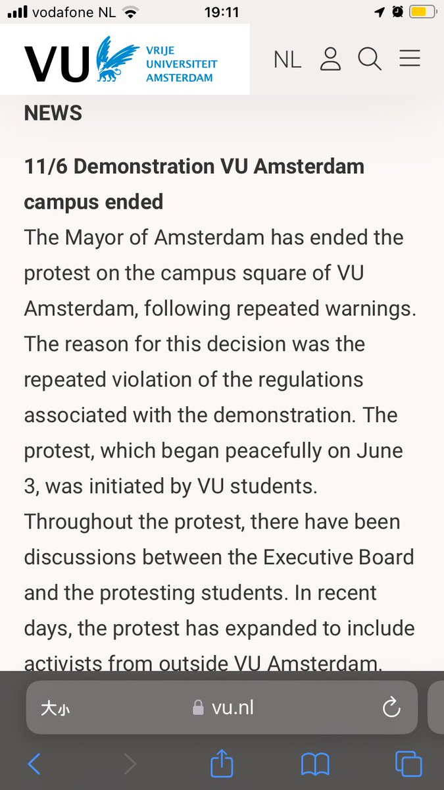

北雁冬翼（simone luxem）🏳️⚧️🏳️🌈🔬
@Simone_Luxem
更新一下，学校方面声称是市长叫的警察，不是学校叫的…
但是还是没有改变根本的问题：如果学校方面明确拒绝，那警察也是来不了；如果学校选择坐视学生受到伤害而不试图进行保护的话，那和选择去伤害有什么区别呢…

北雁冬翼（simone luxem）🏳️⚧️🏳️🌈🔬
@Simone_Luxem
我并不知道如果抗议者没有选择撤离，而是坚持在原地，vu是会选择要警察上去打人，还是把抗议者围起来持续施压之类的和平手段，还是和抗议者谈判…
好吧其实我知道大概率会是什么选择的…所以也许懦弱的我自己在感谢抗议者选择了撤退吧，没有逼迫自己直面最真实的血淋淋的真相，在自己的学校…